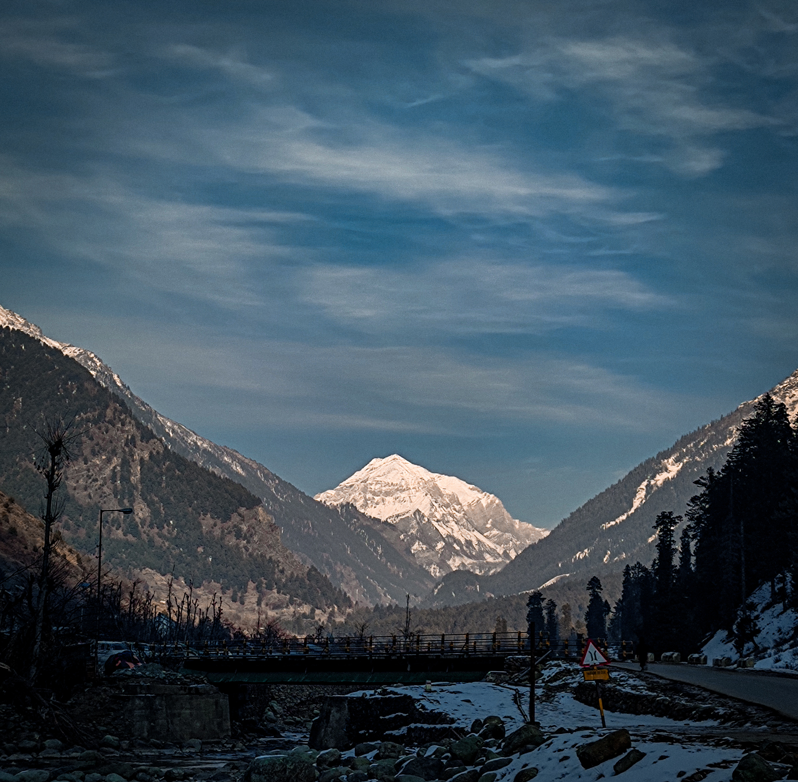

1. Pahalgam, village of shepherds in Kashmiri is a town and a notified area committee, near Anantnag
city in
the Anantnag district of the Indian-administered union territory of Jammu and Kashmir. It is
a popular tourist destination and hill station. Its lush green meadows and pristine waters attract thousands
of tourists from all over the world each year. It is located 45 kilometres (28 mi) from Anantnag on the
banks of Lidder River at an altitude of 7,200 feet (2,200 m). Pahalgam is the headquarters of one of the
eleven tehsils of Anantnag district.
Pahalgam is associated with the annual pilgrimage to the shrine Amarnath Yatra. Chandanwari, located 16
kilometres (9.9 mi) from Pahalgam. The town is the starting point of the yatra that takes place every year
in the months of July-August, receiving hundreds of thousands of tourists. Because of its religious
significance and role as a base camp, the town attracts 70% of visitors to the valley. This flood of
tourists overwhelms some of the local infrastructure, especially waste management in the town.
The name Pahalgam is derived from two Kashmiri words;
Puheyl (shepherd) and goam (village) over the time became Puheylgoam or Pahalgam.The place
acts as a gateway to many meadows and pastures and traditional Bakharwal communities settle there from
spring season to pre-winter, herding their cattle.
According to Hindu traditions, Pahalgam was originally called Bail Gaon (बैल गाँव) meaning (village of bull
(nandi)), in other words, where Shiva left his bull before entering Amarnath Cave.
Pahalgam is located at 34.01°N 75.19°E.[12] Pahalgam holds a central position in the Lidder Valley. It has
an average elevation of 2,740 metres (8,990 ft).
Pahalgam has a temperate climate with long and cold winter and short and mild summer.
As of 2011 India census, Pahalgam had a population of 5922. Males constitute 56% of the population and
females 44%. The average literacy rate is 35%, lower than the Indian national average of 59.5% with male
literacy at 49% and female literacy at 17%. About 14% of the population is under 6 years of age.
Pahalgam is administered by the Pahalgam Development Authority, headed by a Chief Executive Officer who
functions as the administrator of local town area committee.

Tourism
The town has 3,510 rooms with 7,020 beds for tourists.Amarnath Temple Amarnath cave is a Hindu shrine located in Pahalgam. The cave is situated at an altitude of 3,888 m (12,756 ft).
Kolhoi Glacier Kolohoi Glacier, situated up the Lidder Valley, just below Kolhoi Peak is currently a hanging glacier. It is accessible from Pahalgam via Aru and is known to have extended for at least 35 kilometres (22 mi). According to the mountaineers from Jawahar Institute of Mountaineering, in 2008, the glacier receded by half since 1985 and it is not safe to study because it is hollow and has 200-foot-deep (61 m) crevices.
Betaab Valley Also known as Hagoon or Hagan Valley, locally. Betaab Valley is a valley located 15 kilometres (9.3 mi) from Pahalgam. The valley got its name from a Bollywood movie Betaab that was shot here.
Baisaran Valley Baisaran Valley, barely 5 kilometres from Pahalgam in Kashmir's Anantnag district, is a popular tourist attraction that has been dubbed "mini-Switzerland" due to its scenic splendour. It's a verdant meadow on a mountaintop flanked by snowcapped mountains and studded with thick pine woods. The optimum time to go to Baisaran is determined on the type of experience you wish to have. From January through March is the best time to visit if you want to experience the snow. Visit there during April and June to appreciate the foliage and lovely weather.
Pahalgam is one of the most important site for Hindus. Amarnath cave situated at 3,888 m (12,756 ft) is an important Hindu shrine located in Pahalgam.
Mythology
Lord Shiva is believed to impart the secret of immortality (Amrit Vachan) to Parvati in Pahalgam. Before entering Amarnath cave Shiv left nandi in Pahalgam, moon in Chandanwari, snakes in Sheshnag Lake, Ganesha on Mahaguna Parbat, five elements at Panchtarni. Mahaguna Parbat is lies at Nagaparbhat.
 2. Doodhpathri known as Valley of Milk is a tourist destination
and a hill station located in the Khansahib tehsil of the Budgam district of Jammu and Kashmir, India.
Situated at an altitude of 2,730 metres (8,960 ft) from sea level, it is located at a distance of 42 km (26
mi) from Jammu and Kashmir's summer capital, Srinagar, and 30 km (19 mi) from district headquarters, Budgam.
2. Doodhpathri known as Valley of Milk is a tourist destination
and a hill station located in the Khansahib tehsil of the Budgam district of Jammu and Kashmir, India.
Situated at an altitude of 2,730 metres (8,960 ft) from sea level, it is located at a distance of 42 km (26
mi) from Jammu and Kashmir's summer capital, Srinagar, and 30 km (19 mi) from district headquarters, Budgam.
 Doodhpathri is easily accessible from Srinagar or Srinagar Airport (SXR), in under 2-3 hours from car or
bus. The routes of Doodhpathri are from Srinagar to Budgam, Budgam to Ichgam, Ichgam to Khansahib, and
Khansahib to Doodhpathri via Raiyar. The total distance is about 42 km (26 mi).
By road
Doodhpathri is easily accessible from Srinagar in under 1 hour and 58 minutes by car or taxi. The routes to
Doodhpathri are from Srinagar to Budgam, Budgam to Khansahib, and Khansahib to Doodhpathri via Raiyar, a
total distance of about 45 km (28 mi). Another route is from Srinagar to Gulmarg Road; the route starts from
Srinagar to Magam, Magam to Beerwah, and Beerwah to Doodhpathri via Zaingam and Arizal, a total distance of
about 50 km (31 mi).
By air
The nearest airport is the Sheikh ul-Alam International Airport (Srinagar, Jammu and Kashmir). Doodhpathri
is at a distance of 40 km (25 mi) from this airport and it takes about 1 hour by car.
Doodhpathri is easily accessible from Srinagar or Srinagar Airport (SXR), in under 2-3 hours from car or
bus. The routes of Doodhpathri are from Srinagar to Budgam, Budgam to Ichgam, Ichgam to Khansahib, and
Khansahib to Doodhpathri via Raiyar. The total distance is about 42 km (26 mi).
By road
Doodhpathri is easily accessible from Srinagar in under 1 hour and 58 minutes by car or taxi. The routes to
Doodhpathri are from Srinagar to Budgam, Budgam to Khansahib, and Khansahib to Doodhpathri via Raiyar, a
total distance of about 45 km (28 mi). Another route is from Srinagar to Gulmarg Road; the route starts from
Srinagar to Magam, Magam to Beerwah, and Beerwah to Doodhpathri via Zaingam and Arizal, a total distance of
about 50 km (31 mi).
By air
The nearest airport is the Sheikh ul-Alam International Airport (Srinagar, Jammu and Kashmir). Doodhpathri
is at a distance of 40 km (25 mi) from this airport and it takes about 1 hour by car.